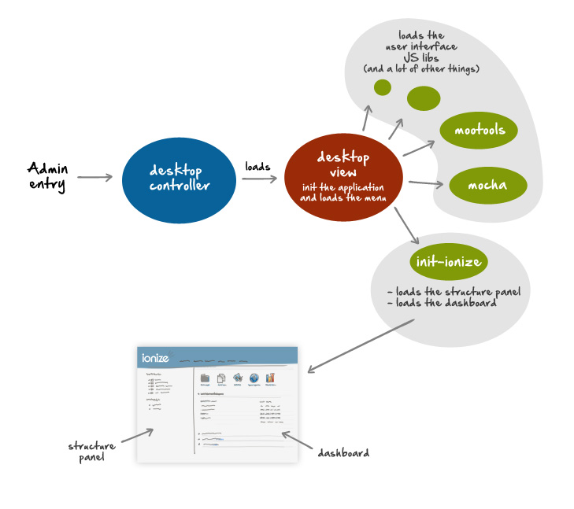

Introduction to Ionize Admin
This chapter will not focus on what is a controller, how Ionize's controllers load models or connect to the database.
If you want to learn more about these topics, visit the CodeIgniter website, because Ionize is based on CodeIgniter.
But...
You will learn the basic of the Ionize administration panel and how the Ionize interface works.
These chapters also describe some specific Ionize libraries.
Admin Panel folders organization
Except for the /themes/admin/ folder, the Ionize administration folder organization follows the standard CodeIgniter application organization.
Important Admin panel folders
| Folder | Usage | Description |
|---|---|---|
| /application/controllers/admin/ | Controllers | All administration controllers |
| /application/libraries/ | Libraries | Librairies shared by the admin panel and the website |
| /application/language/ | Admin panel languages files |
The translations files are used by the admin panel and aren't loaded when the website loads. Important : The language folders name follows the ISO 639-1 standardized nomenclature. |
| /application/models/ | Models | Models shared by the admin panel and the website |
| /application/views/core/ | Views | Default website page and article views. These views have nothing to do with the admin panel. |
| /themes/admin/ | Admin panel UI | Contains all the Administration Panel assets, the Admin javascript UI files and the admin views. |
Admin controllers
During the install process, you choose an admin URL, for example admin123.
All calls to http://your_domain.tld/admin123 will route to the corresponding controller in /application/controllers/admin/ folder.
How do the Admin panel starts ?
If the user's does not have at least the editor level (1000), he can be connected to the website but not to the Administration panel.
All Admin controllers inherit from MY_Admin(), which is protected by the Ionize Connect() library.
The only not protected controller is User(), which displays the login panel.
Once the user is connected, the default admin controller Desktop() is called.
Administration panel loading process :
- The Dekstop() controller loads the view : /themes/admin/views/desktop.php,
- The desktop.php view displays the top menu and loads several JS libs, including the Mocha UI application and the init-ionize.js lib,
- initializeColumns() (in init-ionize) creates the centrals 2 columns (#sideColumn and #mainColumn) and calls through XHR :
- the Structure() controller for displaying the website structure in the side column
- the Dashboard() controller for displaying the dashboard in the main column.
Once the desktop is loaded, all other content is loaded through XHR, using Mocha UI or Ionize's javascript libraries which extends Mocha.
What's important in the loading process ?
- The Mocha UI javascript application : located in /themes/admin/javascript/mocha/mocha.js
- The Ionize init functions : located in /themes/admin/javascript/mocha/init-ionize.js
The Ionize Javascript framework : An extension of Mocha UI
TODO...